V01 · 한국 메인 상단
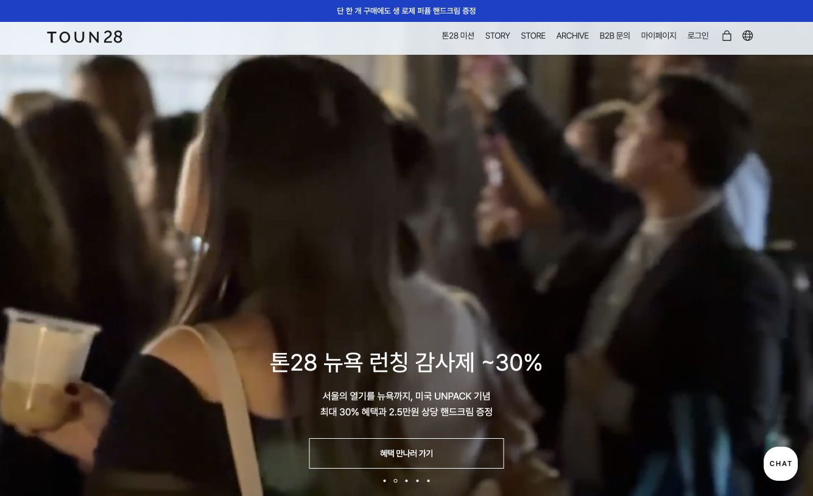
행사 영상, 중앙 흰 제목, 할인과 혜택 버튼. 뉴욕 런칭과 프로모션을 같은 화면에서 전달.
V02 · 한국 블루 섹션
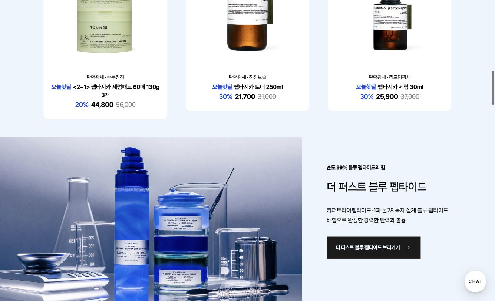
청색 제품·실험 유리기구·저울과 탄력·볼륨 설명. 연구·성분 메시지와 시각적 소재가 연결됨.
V03 · 홍콩 메인 상단
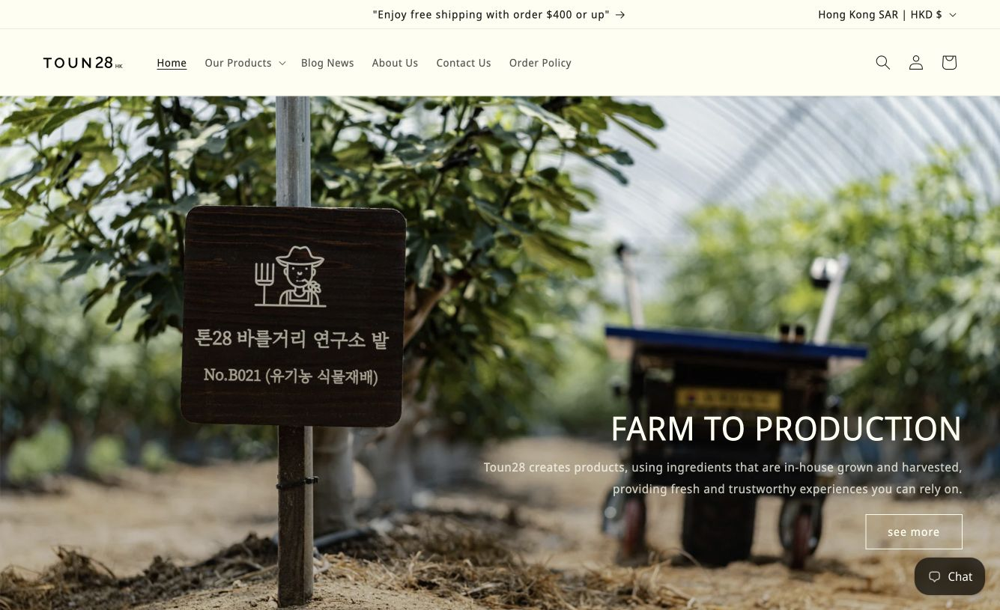
온실·토양·농장 표지판과 FARM TO PRODUCTION. 원료 출처를 구체적인 장소로 제시.
V04 · 홍콩 메인 중단
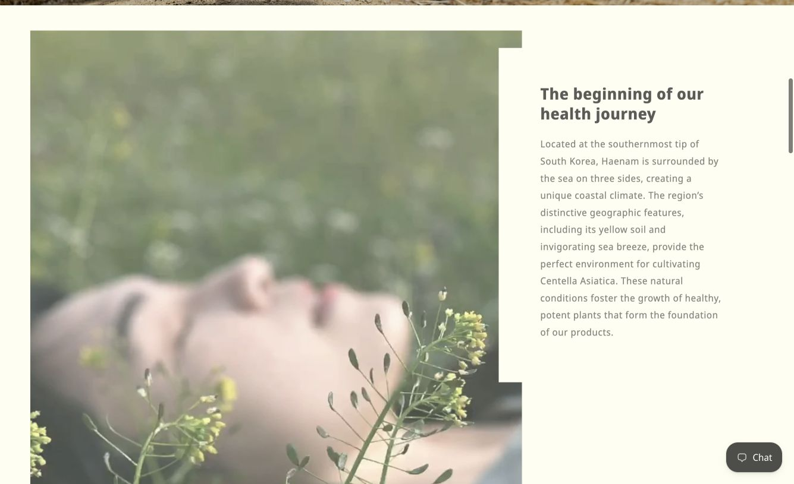
식물과 인물, 크림색 바탕, 해남 설명. 자연·원료 서사가 이어짐.
V05 · 미국 행사 슬라이드
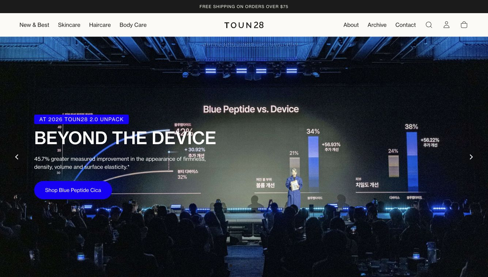
청색 무대·그래프와 BEYOND THE DEVICE. 배경의 한글 그래프와 전경의 영문 설명이 동시에 보임.
V06 · 미국 가입 팝업
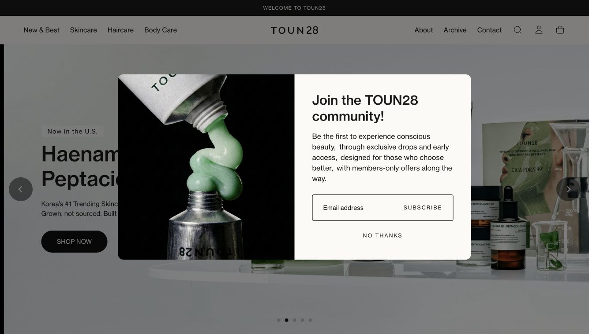
금속 튜브·녹색 제형 클로즈업. 제품의 물성과 의식 있는 아름다움·커뮤니티 가입 문구가 병치됨.
V07 · 일본 바디오일 슬라이드
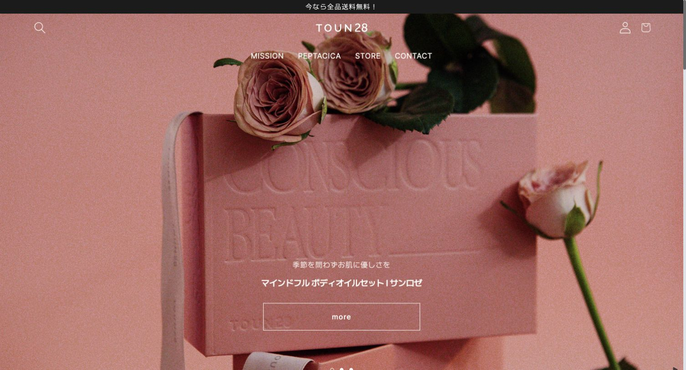
장미·분홍 패키지·엠보싱 문자와 바디오일 세트. 감각과 선물 맥락을 시각화.
V08 · 일본 브랜드 슬라이드
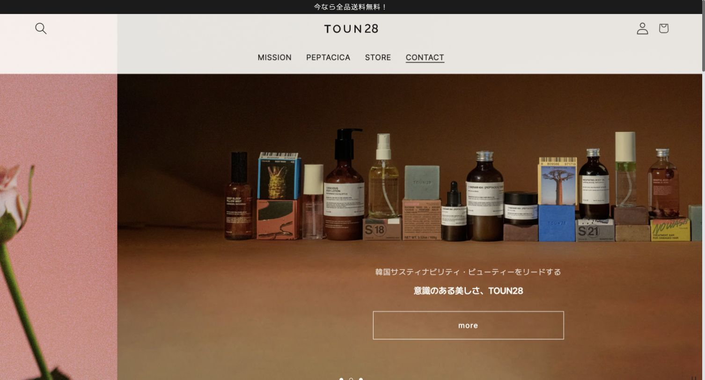
갈색 배경·제품군·지속가능한 아름다움 문구. 슬라이드 전환 중 캡처로 좌측에 이전 화면 일부가 남음.
V09 · 홍콩 Instagram
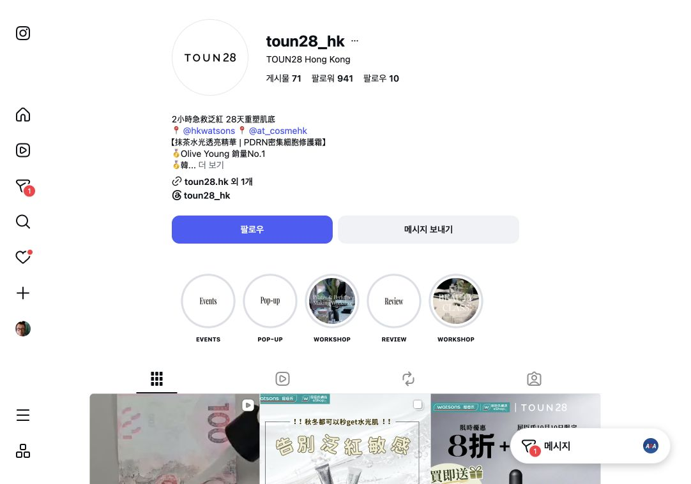
화이트 하이라이트 표지와 이미지 표지가 혼재. 보이는 그리드 일부에 유통사 배지·가격 판촉이 등장.
V10 · Watsons 상품 상단
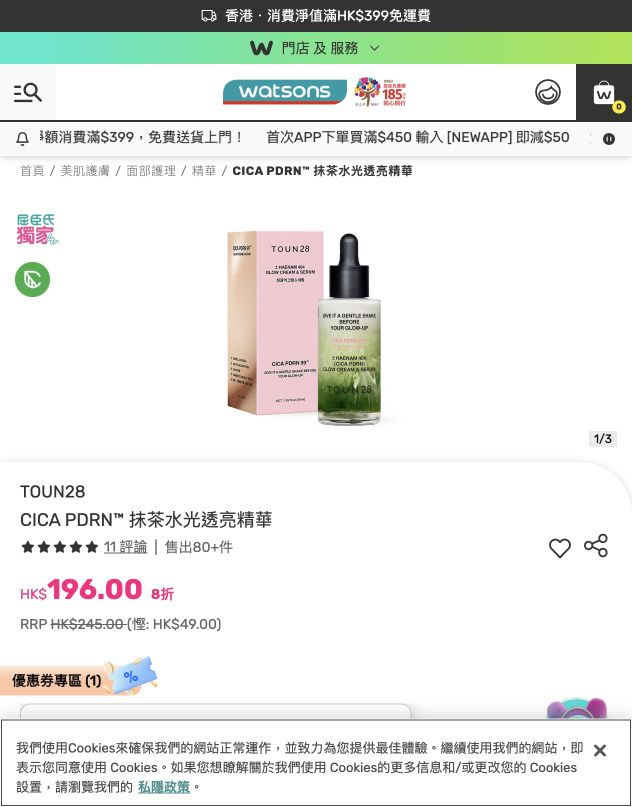
흰 바탕 제품과 패키지, 플랫폼의 녹색 헤더·분홍 가격. 상품 이미지와 플랫폼 UI를 분리해 평가.
V11 · Qoo10 상품 이미지
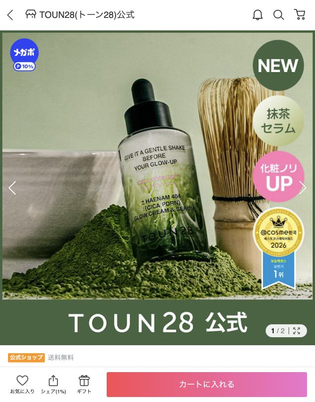
말차 가루·다선·녹색 제형, 화장 밀착 문구, NEW·순위 배지. 상품 이미지 자체에 여러 메시지가 함께 있음.
R01 · @cosme 구매품 후기
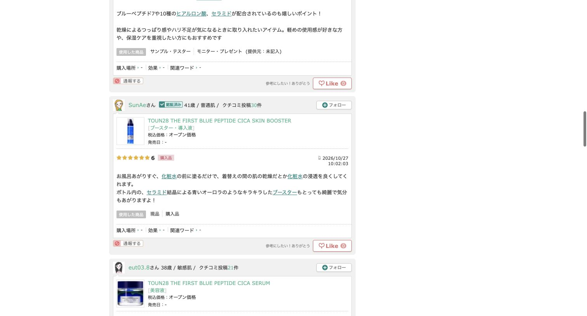
블루 부스터: 병 안의 푸른 오로라 같은 반짝임이 예쁘고 기분이 좋아진다는 경험. 2026-10-27 10:02:03, 구매품 표시.